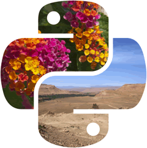

Pillow（PIL）入门教程（非常详细）
Pillow 库（有时也称 PIL 库） 是 Python 图像处理的基础库，它是一个免费开源的第三方库，由一群 Python 社区志愿者使用 Python 语言开发而成（主要贡献者：Alex Clark）。
Pillow 提供了非常强大的图像处理功能，它能够很轻松地完成一些图像处理任务。与 Python 的其他图像处理库相比（OpenCV、Scikit-image 等），Pillow 库简单易用，非常适合初学者学习。
Pillow 库提供了非常丰富的功能，主要有以下几点：
丰富功能的实现得益于 Pillow 提供了众多的模块。在 Pillow 库中有二十多个模块，比如 Image 图像处理模块、ImageFont 添加文本模块、ImageColor 颜色处理模块、ImageDraw 绘图模块等等，每个模块各自实现了不同的功能，同时模块之间又可以互相配合。
在创作教程的过程中，我们尽量从初学者的角度来讲解 Pillow 库的相关知识，使教程通俗易懂、易学、易用。本套教程采用了“知识讲解 + 实例演示”的方式，避免了学习过程中的“枯燥和乏味”。学习完本教程后，您可以使用 Pillow 库完成一些简单的图像处理操作。
猛击这里开始学习➜
Pillow 提供了非常强大的图像处理功能，它能够很轻松地完成一些图像处理任务。与 Python 的其他图像处理库相比（OpenCV、Scikit-image 等），Pillow 库简单易用，非常适合初学者学习。
Pillow 库提供了非常丰富的功能，主要有以下几点：
- Pillow 库能够很轻松的读取和保存各种格式的图片；
- Pillow 库提供了简洁易用的 API 接口，可以让您轻松地完成许多图像处理任务；
- Pillow 库能够配合 GUI（图形用户界面） 软件包 Tkinter 一起使用；
- Pillow 库中的 Image 对象能够与 NumPy ndarray 数组实现相互转换。
丰富功能的实现得益于 Pillow 提供了众多的模块。在 Pillow 库中有二十多个模块，比如 Image 图像处理模块、ImageFont 添加文本模块、ImageColor 颜色处理模块、ImageDraw 绘图模块等等，每个模块各自实现了不同的功能，同时模块之间又可以互相配合。
相关资源
- Python Pillow 官方文档：https://pillow.readthedocs.io/en/latest/
- 本套教程的图片资源下载：https://pan.baidu.com/s/17mhdGCTuKMPS5RuAgbtv3A（提取码：n1v2）
教程特点
本套教程的初衷是尽快让初学者入门，因此更偏重于基础知识。在教程中，我们详细讲解了如何使用 Pillow 库的 Image 模块完成一些图像的处理操作，比如调整图像大小、图像的拷贝、粘贴、裁剪等基础操作，通过这些内容的学习，让您掌握图像处理的基本方法。对于 Pillow 的进阶知识，我们讲解了如何使用 Pillow 为图片添加水印、批量处理图片以及生成 GIF 动态图等。在创作教程的过程中，我们尽量从初学者的角度来讲解 Pillow 库的相关知识，使教程通俗易懂、易学、易用。本套教程采用了“知识讲解 + 实例演示”的方式，避免了学习过程中的“枯燥和乏味”。学习完本教程后，您可以使用 Pillow 库完成一些简单的图像处理操作。
读者&阅读条件
本套 Pillow 教程适合有一定 Python 编程基础的人员学习，如果您已经掌握 Python 基础知识，那可以直接阅读本教程，否则建议您提前阅读《Python基础教程》。通过本套教程的学习，您将初步掌握图像处理的相关知识，将它作为学习图像处理的第一套教程，是一个非常不错的选择。猛击这里开始学习➜
关注公众号「站长严长生」，在手机上阅读所有教程，随时随地都能学习。
不定期发布学习路线+书籍文档+优质视频，为初学者指点迷津。
绑定网站登录功能，再也不用担心密码丢失。
编程11年，建站10年，创业7年，写作6年，既有硬知识，也有软技能。
长期更新，坚持原创，敢说真话，凡事有态度。

微信扫码即可关注